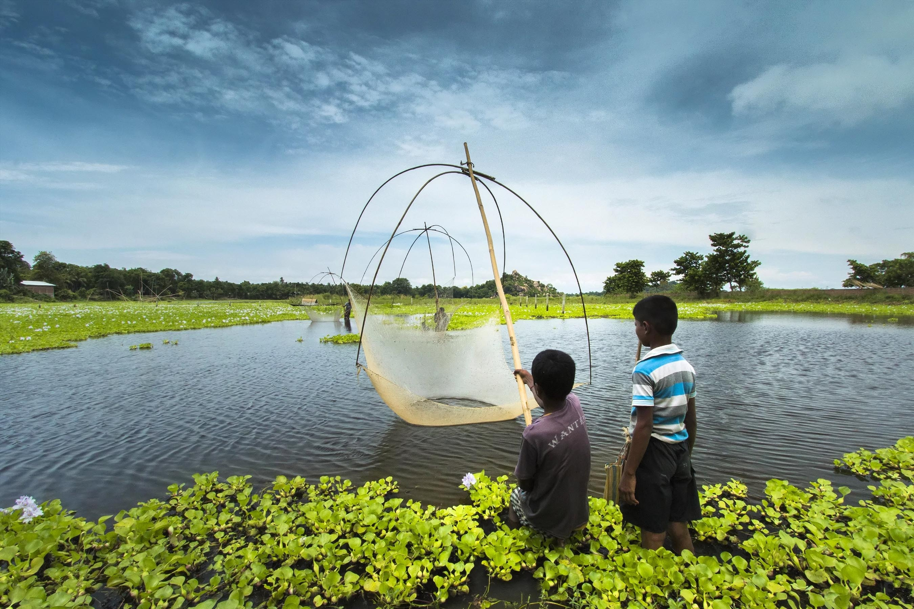
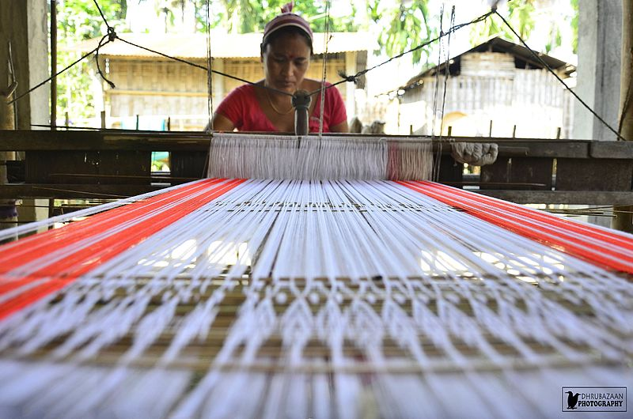

About Majuli Island
Mājuli or Majuli (mazuli)[1] is a large river island located in Assam, India. It is formed by the Brahmaputra River to the south and east, the Subansiri River to the west and an anabranch of the Brahmaputra River called Kherkutia Xuti to the North.[2]
The island is inhabited by members of the Mising, Deori and Sonowal Kachari tribes and is a hub of Assamese neo-Vaishnavite culture.[3] It's reachable by ferry from Jorhat, about 250 kilometers northeast of Guwahati.
Due to regular flooding in the rainy season and frequent changes in the river, the island experiences significant erosion. From its 18th century size of 1,300 km2 (500 sq mi),[4] by 2014, the remaining land mass has shrunk to 352 square kilometres (136 sq mi).[5]
It was the first island in the country to become a governmental district in 2016,[6] and since 2004 Majuli is on the UNESCO Tentative List for nomination as a World Heritage Site.[7]
Largest river island
Main article: River island § Largest and smallest Majuli is the world's largest (inland) river island, according to Guinness World Records.[8] However, the Encyclopædia Britannica cites Bananal Island in Brazil as the largest in the world.[9] The dispute stems from the Araguaia River that forms Bananal Island either splitting into two separate rivers that later rejoin, or remaining one river that forms an island in its middle.
History
This section provides insufficient context for those unfamiliar with the subject. Please help improve the article by providing more context for the reader. (February 2024) (Learn how and when to remove this message) The island was a long and slender piece of land, located between two parallel rivers, the Brahmaputra to the north and the Burhidihing to the south, where they converged at a place called Lakhu. Originally, it bore the name Ratnapur and served as the capital of the mighty Sutiya kingdom. In the years between 1661 and 1696,[10] a series of earthquakes in the 17th century set the stage for a massive flood in 1750, which reshaped the region. This flood caused the Brahmaputra to change course, resulting in the formation of Majuli island.[11]
The Ahom king Pratap Singha built a rampart on Majuli called Meragarh in the first half of the 17th century. Lakshmi Singha (Ahom king who reigned from 1769-1780), wrote a grant in 1776 referring to "Majuli pradesh" and its Kamalabari Satra, Agnichapori, Gajala Satra, and the Tuni River. During the Moamaria rebellion, the island was controlled by Howha, a Moamaria rebel leader.[12]
The Burhi Dihing's confluence moved east by 190 km[when?]. The southern channel became the Burhi Xuti, and the northern channel turned into the Luit Xuti. Over time, the Luit Xuti diminished, becoming the Kerkota Xuti, while the Burhi Xuti expanded to become the main Brahmaputra River.[13]
Majuli has been Assamese civilization's cultural hub since the 16th century, connected to the visit of Srimanta Sankardeva, a 16th-century social reformer. Sankardeva, a pioneer of the neo-Vaishnavite movement, preached Vaishnavism and established monasteries called satras on the island.[citation needed]
Majuli became a major hub of Vaishnavism with the establishment of satras. It was under British rule until India gained independence in 1947 and is the world's largest river island..[14] Over the last 200 years Majuli has shrunk in size as the river surrounding it has grown.[15] In the 1790s, the island covered an area of 1,300 km2 (500 sq mi).[16] It had an area of 1,255 square kilometres (485 sq mi) at the beginning of the 20th century,[17] but, having lost significantly to erosion, it covers only 352 square kilometres (136 sq mi) as of 2014.[18] Culture and demography
Population
The population of Majuli is comprised[quantify] of the scheduled tribes and castes as well as the non-tribal caste[clarification needed] Hindu Assamese. The indigenous communities include members of the Mising (majority), Deori, Kaibarta, and the Sonowal Kachari tribes who immigrated from Arunachal Pradesh to Majuli centuries ago[citation needed]. The non-tribal caste Hindu Assamese communities include Koch, Kalita, Ahom, Sutiya, and Jogi. Languages spoken are Mising, Assamese, and Deori. The island has 144 villages with a population of over 150,000 and a density of 300 individuals per square km.[19]
A ferry service connecting Majuli to Jorhat operates six times daily. Night buses run from Guwahati to Majuli via Lakhimpur. Despite challenges, modernization has reached the island with the establishment of medical centers and schools. Housing has also transitioned from traditional bamboo and mud structures to concrete ones.[19]
Festivals
The Ali aye ligang festival, celebrated in mid-February for five days, is a grand event starting on the second Wednesday and ending on the first Wednesday of the Falgun month. Local dishes like purang apin (packed boiled rice), apong (rice beer), and various pork, fish, and chicken dishes are served. The traditional Mising dance called Gumrag Soman is performed in every village to worship Donyi polo (mother sun and father moon) for a good harvest.[20]
In upper Majuli, the majority of Christians in the Mising tribe celebrate Christmas, centered in the village of Jengraimukh. For the last half millennium, Majuli has been the cultural center and cradle of Assamese civilization.[21] The satras safeguard ancient artifacts like weapons, utensils, jewelry, and culturally significant items. Traditional pottery is crafted using clay and fired in driftwood kilns, following the methods of the ancient Harappan Civilization. These ancient cultural practices and dance forms remain largely intact, despite pressure from modernizing forces. The hand-loom work of these tribes enjoys international acclaim.
The three-day long Raas Mahotsav festival, portraying Krishna's life, involves virtually everyone on the island. People from afar, even expatriates, come to celebrate. The satras have mastered various art and craft traditions, some of which are exclusive to this region. For instance, mask-making is a craft found in Natun Samuguri Satra, and Kamalabari Satra is renowned for crafting exceptional boats.
Literature
Neo-Vaishnavi preacher Madhavdev met his guru Shankar Dev, the founder of neo-Vaishnavism, on the island which is termed the "Manikanchan Sanjog".[23] Madhavdev and his mentor enriched Assamese literature by writing, among other works, Nam Ghosa, Borgeet and Bhatima. Following the footsteps of the Vaishnavi leaders, temples (Satras) encouraged the writing of plays and devotional songs.
Majuli also gave birth to a host of literary luminaries that includes well-renowned writers like Dhruba Jyoti Borah, poet and critic Rajib Borah, bilingual critic and writer Bhaskar Jyoti Nath, Juri Borah Borgohain, Deba Bhusan Borah, historian Dambarudhar Nath, novelist Gobin Khound, and poet Danny Gam.[24]
The second Assamese newspaper Asom Bilasini was published from Majuli from 1871 onwards.[25]
Ecology
Majul is a wetland, serves as a habitat for various rare and endangered avian species, particularly migratory birds that visit during the winter. Notable species include the greater adjutant stork, pelican, Siberian crane, and whistling teal. After dark, wild geese and ducks take flight to distant destinations.[26] The island remains relatively pollution-free due to the absence of industrial activity and consistent rainfall.[27]
However, Majuli faces a significant threat from extensive soil erosion along its banks. Large embankments built in nearby towns upstream to prevent monsoon-season erosion have had unintended consequences. The turbulent Brahmaputra River now erodes much of the island. Reports indicate that by 1853, Majuli's total area was 1,150 km², and roughly 33% of this landmass eroded in the latter half of the 20th century. Since 1991, more than 35 villages have been washed away, and surveys predict that Majuli may cease to exist within the next 15-20 years.[28]
To save the island, the Union Government of India has sanctioned ₹ 2.50 billion (US$55 million) for the protection of the island. The water resource department & The Brahmaputra Board have been struggling to solve the erosion problem of this island for the last three decades but without much success. Recently it was suggested that only a four-lane highway protected by concrete mat along the southern boundary of Majuli and the excavation of river bed of the Brahmaputra River can solve the problem. The project also includes two flood gates for the Kherkatia Suti which is a tributary of the Brahmaputra. The Brahmaputra River Restoration Project is yet to be implemented by the government. However, a nomination has been sent to UNESCO for the declaration of Mājuli as a World Heritage Site.[29]
Local environmental activist Jadav Payeng has planted a 550-hectare forest, known as Molai Forest to combat erosion on the island.[30] Much of the island was barren sandbars that were vulnerable to erosion, but thanks to Payeng's afforestation, has become a lush forest. The forest has become a habitat for animals including elephants, tigers, deer, and vultures.[31][32]